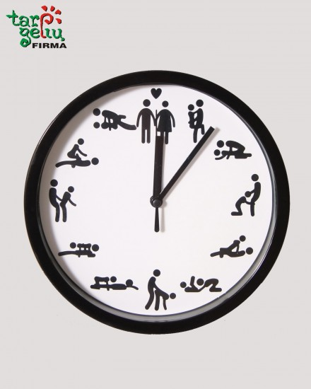
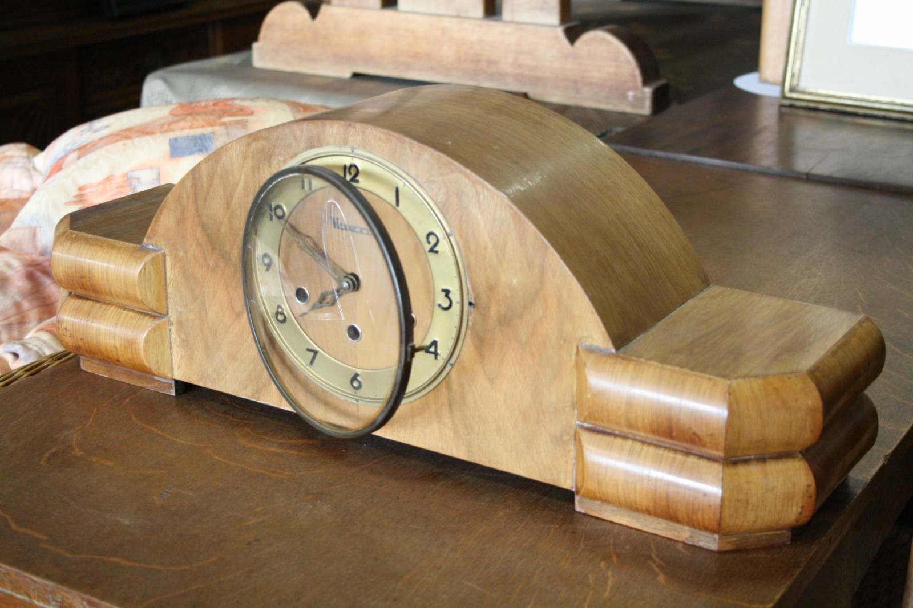

Sieninių medinių laikrodžių asortimentas - Decotoma - stilingi akcentai namams
 Prisijungti Susisiekite su mumis Susisiekite dabar: +370 654 21262 Krepšelis 0 Prekė Prekės (tuščia)
Prekių nėra
Nemokamas pristatymas nuo 50Eur Pristatymas 0,00 € VisoPirkti
Prekė sėkmingai pridėta į krepšelį
Kiekis VisoKrepšelyje yra 0 prekė (-ės). Krepšelyje yra 1 prekė.
Prekės viso (su PVM) Viso pristatymas (be PVM) Nemokamas pristatymas nuo 50Eur Viso (su PVM) Tęsti apsipirkimą Pereiti prie apmokėjimo Kategorijos Laikrodžiai Vaikiški laikrodžiai Aksesuarai laikrodžiams Interjero detalės Dovanų kuponai Straipsniai Laikrodžių kolekcija Laikrodžių kolekcijaKurdami namų interjerą siūlome ieškoti įdomių sprendimų dekoravimui. Tam puikiai tiks autentiški interjero aksesuarai – sieniniai mediniai laikrodžiai. Ažūriniai, įvairių raštų mediniai laikrodžiai iš natūraliu medžio lukštu dengtos plokštės gaminami Lietuvoje. Sieninių laikrodžių tikslų veikimą užtikrina patikimas tyliai einantis mechanizmas.
Kurdami namų interjerą siūlome ieškoti įdomių sprendimų dekoravimui. Tam puikiai tiks autentiški interjero aksesuarai – sieniniai mediniai laikrodžiai. Ažūriniai, įvairių raštų mediniai laikrodžiai iš natūraliu medžio lukštu dengtos plokštės gaminami Lietuvoje. Sieninių laikrodžių tikslų veikimą užtikrina patikimas tyliai einantis mechanizmas.
DaugiauLaikrodžių kolekcija Yra 96 prekių.
Rodyti: Tinklelis Sąrašas Ankstesnis 1 2 3 ... 8 Sekantis Rodoma 1 - 12 iš 96 dalykų Greita peržiūra 30,00 €Sieninis laikrodis Spike
*Dydis 350mmx350mm*Laikrodžio mechanizmasTylus, neskleidžiantis garso.*Pastaba:Šie laikrodžiai pagaminti iš natūraliu medžio lukštu dengtos plokštės, spalva ir tekstūra gali šiek tiek skirtis nuo pavaizduotos nuotraukoje.
30,00 € Į krepšelį Daugiau turime Pridėti palyginimui Greita peržiūra 59,00 €Sieninis laikrodis Polygonal 60cm
*Dydis 600mmx600mm*Laikrodžio mechanizmasTylus, neskleidžiantis garso.*Pastaba: Šie laikrodžiai pagaminti iš natūraliu medžio lukštu dengtos plokštės, spalva ir tekstūra gali šiek tiek skirtis nuo pavaizduotos nuotraukoje. Gaminamas pagal specialų užsakymą. Gamybos terminas iki 10 darbo dienų.
59,00 € Į krepšelį Daugiau gaminamas iki 10 d.d. Pridėti palyginimui Greita peržiūra 35,00 €Sieninis laikrodis Signum
*Dydis 430mmx430mm*Laikrodžio mechanizmasTylus, neskleidžiantis garso.*Pastaba:Šie laikrodžiai pagaminti iš natūraliu medžio lukštu dengtos plokštės, spalva ir tekstūra gali šiek tiek skirtis nuo pavaizduotos nuotraukoje.
35,00 € Į krepšelį Daugiau turime Pridėti palyginimui Greita peržiūra 55,00 €Sieninis laikrodis Dreamcatcher 55cm
*Dydis 550mmx520mm*Laikrodžio mechanizmasTylus - neskleidžiantis garso. Apsaugotas nuo dulkių. Turi metalinę pakabinimo kilpą.*Pastaba: Šie laikrodžiai pagaminti iš natūraliu, grafito (pilkos) spalvos aliejiniu beicu tonuotu medžio lukštu dengtos plokštės, spalva ir tekstūra gali šiek tiek skirtis nuo pavaizduotos nuotraukoje.
55,00 € Į krepšelį Daugiau turime Pridėti palyginimui Greita peržiūra 29,00 €Sieninis laikrodis SPOT LONG TIME
*Dydis 120mmx120mm*Laikrodžio mechanizmasTylus - neskleidžiantis garso. Su pakabinimo kilpute.*Charakteristikos: Laikrodis pagamintas iš natūraliu veliūru dengtos medžio plokštės. Metalinės labai ilgos rodyklės.
29,00 € Į krepšelį Daugiau gaminamas iki 5 d.d. Pridėti palyginimui Greita peržiūra 69,00 €Sieninis laikrodis SCALA 70cm
*Dydis 700mm x 700mm*Laikrodžio mechanizmasTylus, neskleidžiantis garso. Apsaugotas nuo dulkių. Turi metalinę pakabinimo kilpą.*Pastaba:Šie laikrodžiai pagaminti iš natūralia ąžuolo fanerute dengtos plokštės, spalva ir tekstūra gali skirtis nuo pavaizduotos nuotraukoje. Gaminamas pagal specialų užsakymą. Gamybos terminas iki 10 darbo dienų.
69,00 € Į krepšelį Daugiau gaminamas iki 10 d.d. Pridėti palyginimui Greita peržiūra 37,00 €Sieninis laikrodis Velvet Monstera
*Dydis 430mmx430mm*Laikrodžio mechanizmasTylus, neskleidžiantis garso.*Pastaba: Šie laikrodžiai pagaminti iš natūraliu medžio lukštu dengtos plokštės bei veliūrinio audinio, spalva ir tekstūra gali šiek tiek skirtis nuo pavaizduotos nuotraukoje.
37,00 € Į krepšelį Daugiau turime Pridėti palyginimui Greita peržiūra 54,00 €Sieninis laikrodis ETNO 55cm
*Dydis 550mmx550mm*Laikrodžio mechanizmasTylus, neskleidžiantis garso.*Pastaba: Šie laikrodžiai pagaminti iš natūraliu medžio lukštu dengtos plokštės, spalva ir tekstūra gali šiek tiek skirtis nuo pavaizduotos nuotraukoje.
54,00 € Į krepšelį Daugiau turime Pridėti palyginimui Greita peržiūra 22,00 €Sieninis laikrodis SPOT Forest
*Dydis 120mmx120mm*Laikrodžio mechanizmasTylus - neskleidžiantis garso. Su pakabinimo kilpute.*Charakteristikos: Laikrodis pagamintas iš natūraliu veliūru dengtos medžio plokštės. Metalinės ažūrinės rodyklės.
22,00 € Į krepšelį Daugiau turime Pridėti palyginimui Greita peržiūra 70,00 €Sieninis laikrodis Square 70cm
*Dydis 700mmx700mm*Laikrodžio mechanizmasTylus, neskleidžiantis garso.*Pastaba: Šie laikrodžiai pagaminti iš natūraliu medžio lukštu dengtos plokštės, spalva ir tekstūra gali šiek tiek skirtis nuo pavaizduotos nuotraukoje. Gaminamas pagal specialų užsakymą. Gamybos terminas iki 10 darbo dienų.
70,00 € Į krepšelį Daugiau gaminamas iki 10 d.d. Pridėti palyginimui Greita peržiūra 22,00 €Sieninis laikrodis SPOT Sand
*Dydis 120mmx120mm*Laikrodžio mechanizmasTylus - neskleidžiantis garso. Su pakabinimo kilpute.*Charakteristikos: Laikrodis pagamintas iš natūraliu veliūru dengtos medžio plokštės. Metalinės ažūrinės rodyklės.
22,00 € Į krepšelį Daugiau turime Pridėti palyginimui Greita peržiūra 22,00 €Sieninis laikrodis SPOT Rust
*Dydis 120mmx120mm*Laikrodžio mechanizmasTylus - neskleidžiantis garso. Su pakabinimo kilpute.*Charakteristikos: Laikrodis pagamintas iš natūraliu veliūru dengtos medžio plokštės. Metalinės ažūrinės rodyklės.
22,00 € Į krepšelį Daugiau turime Pridėti palyginimui Ankstesnis 1 2 3 ... 8 Sekantis Rodoma 1 - 12 iš 96 dalykųNaujienlaiškiai
Facebook Google Plus Pinterest InstagramSekite mus
Kategorijos
Laikrodžių kolekcija Vaikiški laikrodžiai Aksesuarai laikrodžiams Dovanų kuponai Interjero detalėsInformacija
Specialūs pasiūlymai Naujos prekės Perkamiausios Susisiekite su mumis Prekių pristatymas Atsiskaitymas Pirkimo taisyklės Privatumo politika © 2020 Decotoma - sieniniai mediniai laikrodžiai | Visos teisės saugomos.Mano paskyra
Mano užsakymai Mano suteiktos nuolaidos Mano adresai Mano asmeninė informacija Mano kuponaiParduotuvės informacija
Individualios veiklos pažymėjimas Nr. 646328 Susisiekite dabar: +370 654 21262 El. paštas: info@decotoma.com Informuojame, kad šioje svetainėje naudojami slapukai (angl. Cookies). Sutikdami, paspauskite mygtuką „Sutinku“. Savo duotą pasirinkimą bet kada galėsite atšaukti pakeisdami savo interneto naršyklės nustatymus ir ištrindami įrašytus slapukus. PlačiauSutinku
